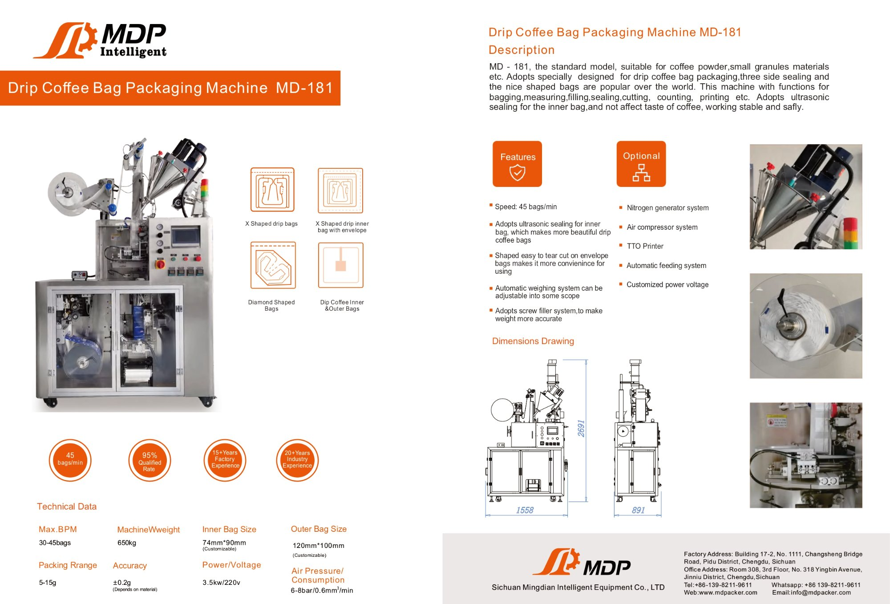
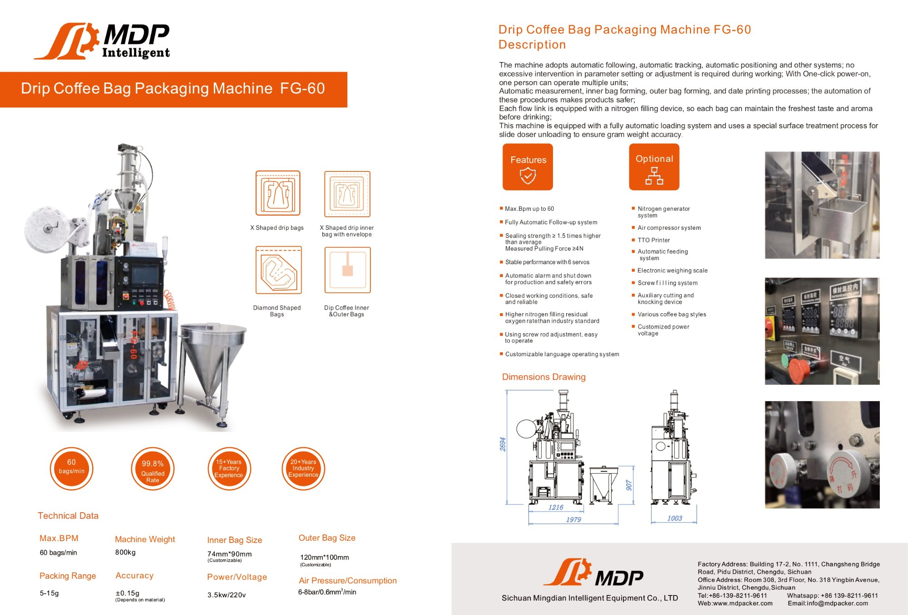
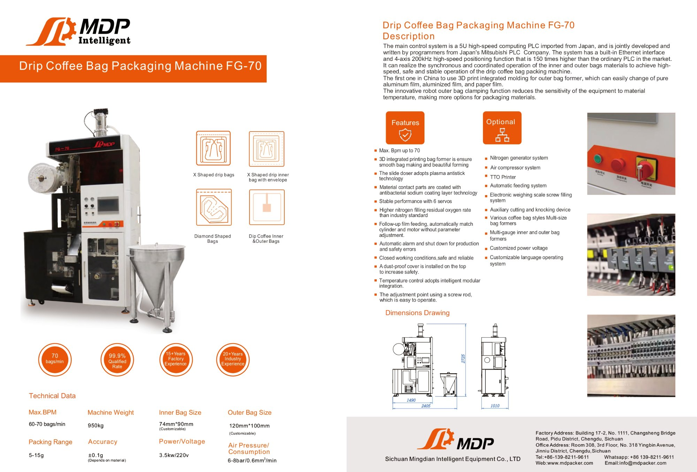
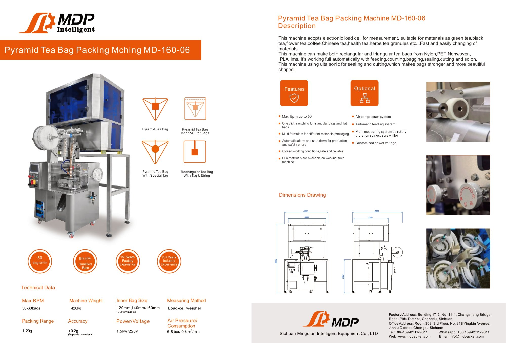
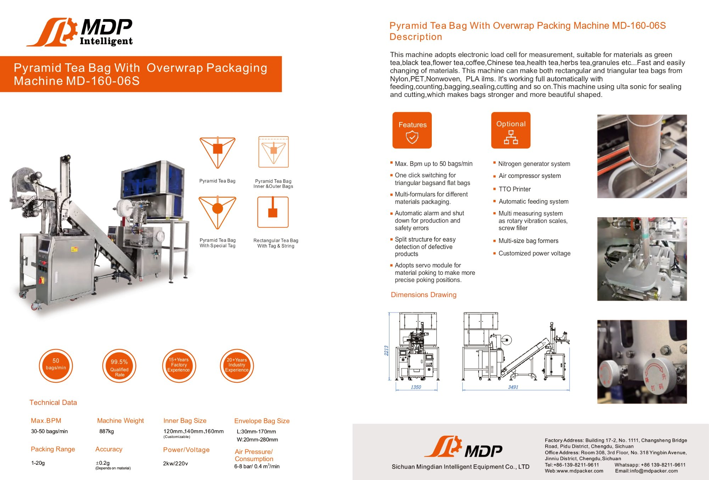
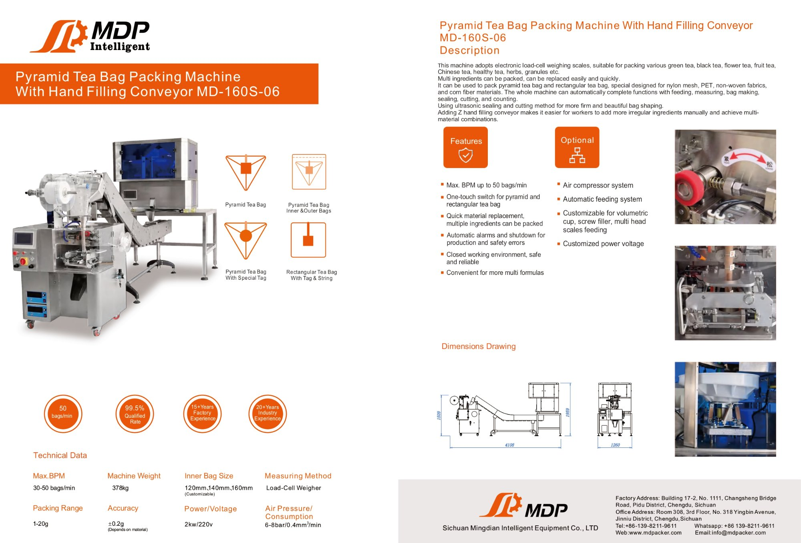
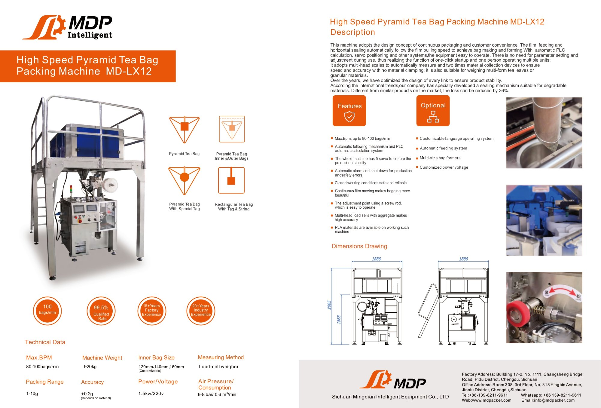
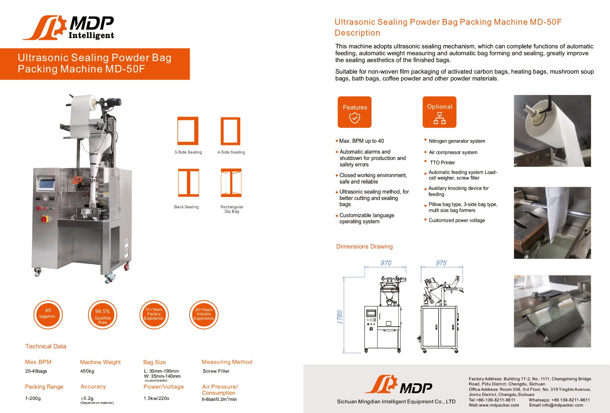
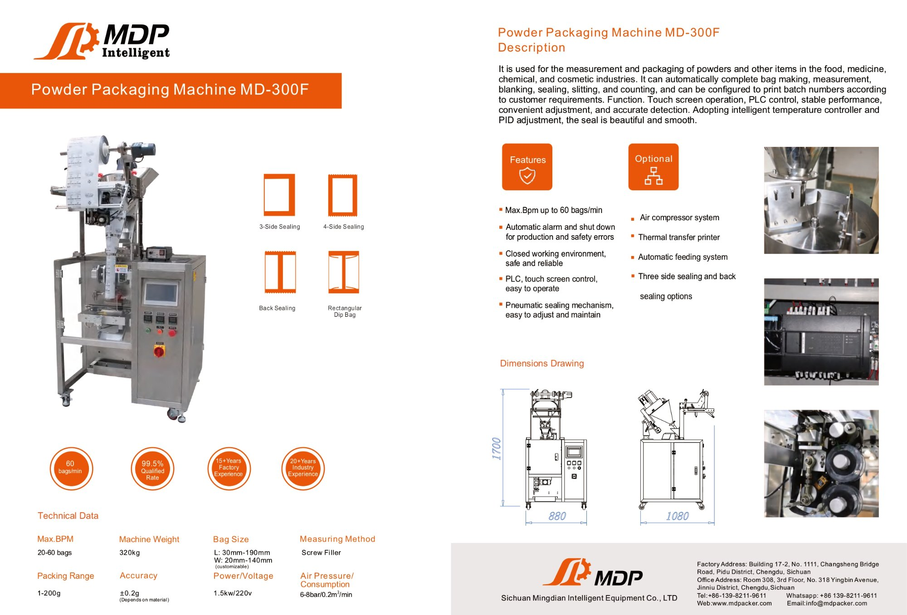
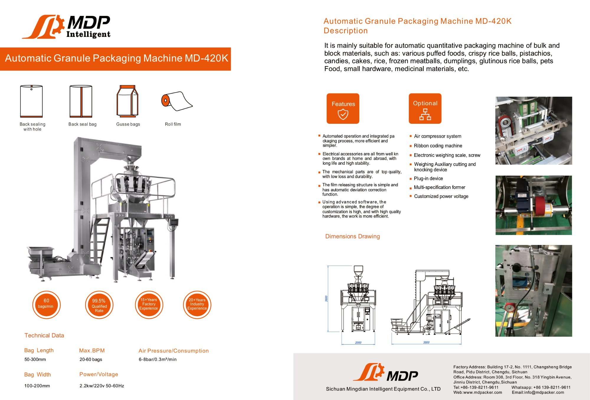

Packaging Machines · MDP Intelligent
드립백 머신
전체 라인업
드립백·티백·파우더·캡슐까지 15종. 생산 규모와 예산에 맞는 최적의 패키징 머신을 찾아드립니다.
드립백 머신 Drip Bag



피라미드 티백 머신 Tea Bag




파우더 · 과립 · 액체 · 캡슐 Other




Packaging Machines · MDP Intelligent
드립백·티백·파우더·캡슐까지 15종. 생산 규모와 예산에 맞는 최적의 패키징 머신을 찾아드립니다.